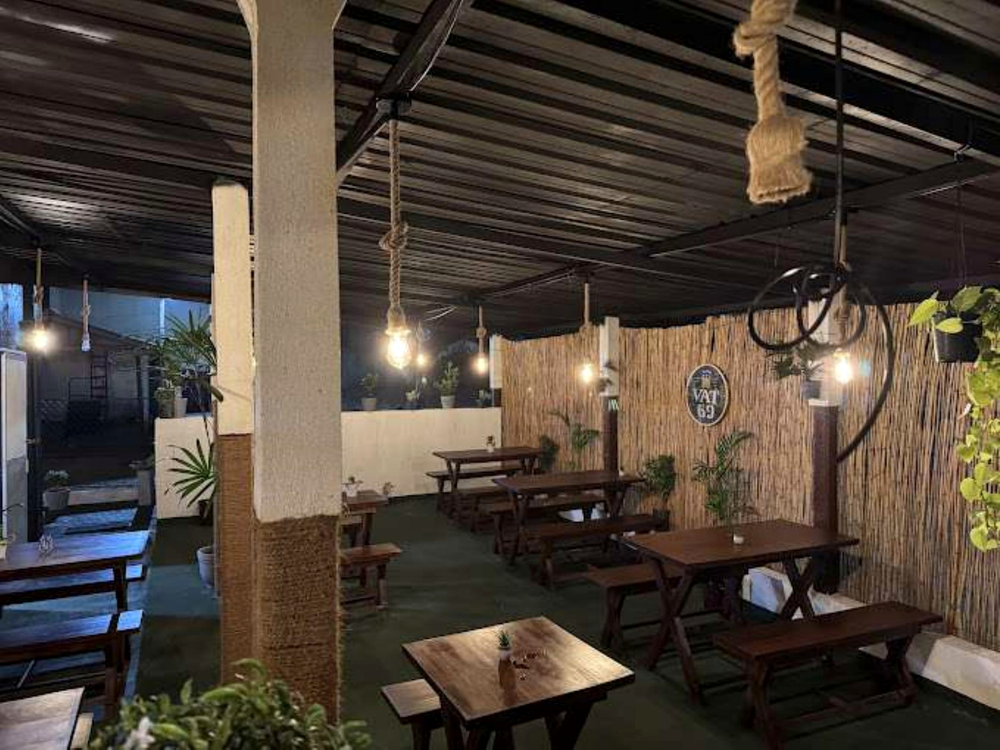

A LITTLE
COASTAL
ESCAPE
COASTAL
ESCAPE
WELCOME TO THE RALLA
A relaxed place
to gather around food.
Set in Negombo, The Ralla is listed as a casual restaurant for lunch and dinner. The photographs shared for this website show seafood platters, fish, rice dishes and a laid-back dining space.
Come hungry, bring your people, and contact the team directly to confirm today's specials, availability and prices before ordering.
10:00 AM – 11:30 PMListed opening hours*
Negombo, Sri LankaCoastal town dining